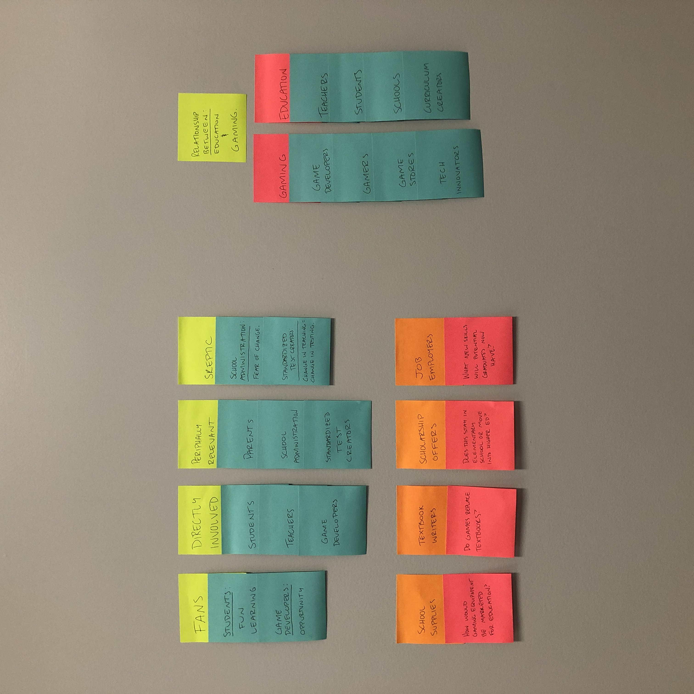
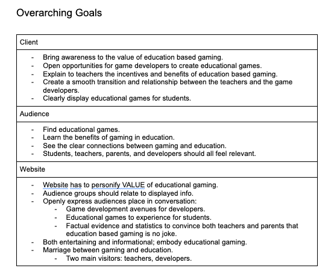
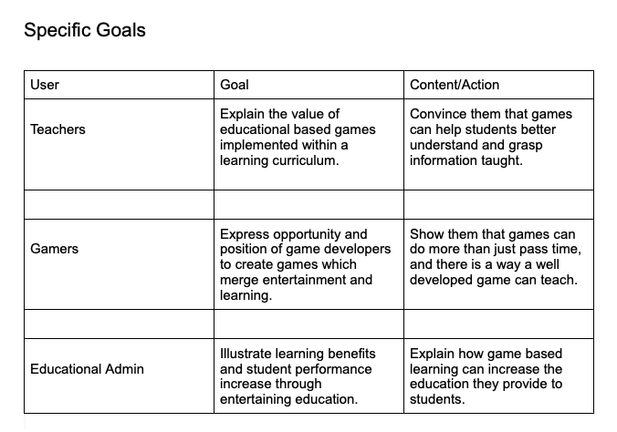

Audience
The overarching goals for the client, the audience, and the website itself. This page helps in understanding the client, audience, and website goals and needs.

Redesign Focus:
An important aspect of the website redesign will be to relate to the two major parties involved in education gaming: Teachers and Game Developers. The new design will have a theme of duality and balance between aspects of the proposition that involves teachers and game developers; teacher info being very statistic based while game developer info being creative based.

